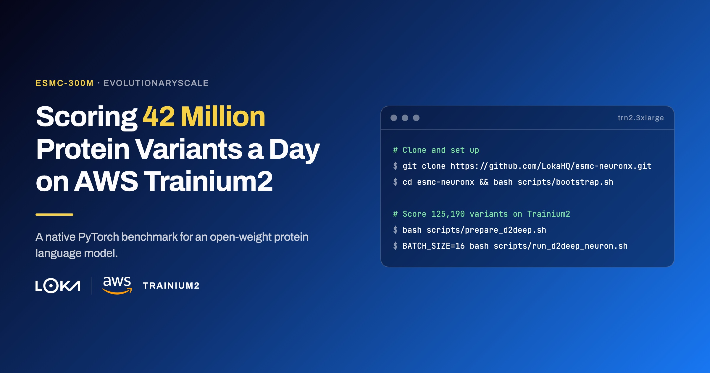

Scoring 42 Million Protein Variants a Day on AWS Trainium2 A native PyTorch benchmark for an open-weight protein language model
· Last updated:

Introduction #
Protein variant effect prediction is a core problem in computational biology. Every human protein can be altered by thousands of single-amino-acid substitutions. Some cause disease. Most do not. Distinguishing the two, at scale, underpins therapeutic target selection, clinical variant interpretation, and personalized medicine pipelines.
The traditional approach is expensive and slow: wet-lab deep mutational scanning, computational homology modeling, or population-scale gnomAD[1] lookups. Protein language models[2] changed the economics. A model trained on hundreds of millions of natural protein sequences learns, implicitly, which amino acids are tolerated at each position and which are not. A substitution that is unlikely under the model's learned distribution can be associated with reduced functional tolerance, while a score close to wild type can be consistent with benign variation. These scores are useful evidence, not clinical diagnoses.
ESMC-300M[3], from EvolutionaryScale[4], is a strong open option for this task. It is an encoder-only model of the ESM-C family[5], trained on sequences from UniRef[6], MGnify[7], and JGI[8]. The weights are public, the architecture is a standard bidirectional Transformer, and zero-shot variant scoring needs no fine-tuning.
Trainium2 gave us exactly what we wanted to see. ESMC-300M ran cleanly on a single trn2.3xlarge and reached 490.8 variants per second. That works out to approximately 42.4 million protein variants scored per day on one small Trainium2 instance.
The cost story is just as important. At that throughput, Trainium2 comes in at approximately $1.26 per million variants scored, compared with $3.17 on H100. That is 60% lower cost per million variants, or about 2.5× more variants for the same accelerator budget.
The key model-side compatibility change was to turn off Flash Attention so the model could use the standard attention path supported by Trainium2. After that, ESMC-300M ran without a model rewrite.
We evaluated on D2Deep[10]: 125,190 human protein variants (109,700 benign, 15,490 pathogenic), scored zero-shot using the log-probability delta between the mutant and wild-type amino acid in context. The four-logical-NeuronCore configuration with batch=16 reaches 490.8 samples/s at approximately $1.26 per million samples scored, 60% lower cost than H100 at higher measured throughput in this fixed-shape benchmark.
What makes ESMC different #
ESMC is encoder-only: bidirectional attention over all residues simultaneously, no decode loop, no KV (Key-Value) cache[12]. For variant scoring, that is exactly what you want. One forward pass per variant: feed in the wild-type sequence, read log-softmax at the mutation position, compute the delta[2]. No generation, no sampling.
The architecture is a standard bidirectional Transformer with rotary positional embeddings (RoPE), SwiGLU feed-forward layers[13], and a 33-token protein vocabulary. ESMC-300M loads in ~0.6 GB at bfloat16 and runs efficiently at batch=1—the natural shape for single-variant scoring.
| Model | Layers | Hidden | Heads | Parameters | Weight size |
|---|---|---|---|---|---|
| ESMC-300M | 30 | 960 | 15 | ~300M | ~0.6 GB (bfloat16) |
| ESMC-600M | 36 | 1152 | 18 | ~600M | ~1.2 GB (bfloat16) |
The key Neuron compatibility requirement is disabling Flash Attention. ESMC uses Flash Attention[14] by default; passing use_flash_attn=False at load time switches to standard scaled-dot-product attention, which compiles cleanly. It is easy to miss and blocks compilation if overlooked. The esm_neuron package in this repository handles it automatically.
Scale performance, not cost with AWS Trainium2 #
In this benchmark we focus on the low-batch regime: scoring inside a latency-bound or sequential loop, such as interactive scoring behind an API, agentic tool calls that request one score and wait, or RL-guided design like LatProtRL, where each step depends on the previous reward. Here batch size stays low by design, and per-request turnaround matters more than saturating the hardware.
This is where Trainium2[15] fits naturally. A trn2.3xlarge gives one Trainium2 chip with four logical NeuronCores (eight physical NeuronCore-v3 paired into four under the default LNC=2 configuration) and 96 GB of accelerator memory. The one-day São Paulo Capacity Block reservation rate used here is $2.235/hour[16]. The reported full D2Deep evaluation—125,190 variants—completes in around 255 seconds. At that rate, one trn2.3xlarge can score approximately 42.4 million variants per day.
ESMC's encoder architecture maps well onto Trainium2. Unlike autoregressive generation—where each token depends on the last and the model runs N times per sequence—ESMC does one forward pass per sample with fully static shapes once sequence length is fixed. Static shapes are exactly what the Neuron compiler[17] is designed for.
Setup #
We ran the Trainium2 experiments on a single trn2.3xlarge (4 logical NeuronCores, 96 GB accelerator memory). Four Docker workers ran in parallel, each pinned to one NeuronCore via NEURON_RT_VISIBLE_CORES, processing a quarter of the D2Deep dataset independently. The model ran through native PyTorch[9] on the Neuron backend (TorchNeuron[11], in beta at the time of writing).
For the H100 comparison, we used the same ESMC checkpoint, scoring procedure, D2Deep inputs, sequence length (512), and batch size (16). This is an application-level comparison for the stated workload and shape, not a claim that one accelerator is universally faster across models or batch sizes.
| Component | Setting |
|---|---|
| Instance | trn2.3xlarge |
| Chip | 1 Trainium2 chip |
| Runtime | PyTorch 2.11.0, Native PyTorch Neuron DLC (TorchNeuron, beta) |
| Compiler | NEURON_CC_FLAGS=--target trn2 --model-type transformer |
| Compile strategy | Regional (transformer blocks compiled individually) |
| Batch size | 16 (headline configuration; the batch=1 results use the same setup at batch size 1) |
| Sequence length | 512 tokens (fixed shape) |
| Model | ESMC-300M, bfloat16, use_flash_attn=False |
| D2Deep variants | 125,190 (109,700 benign / 15,490 pathogenic) |
Results and analysis #
The headline result is compatibility and quality. ESMC-300M compiled cleanly on Trainium2 with no model rewrite. Quality was effectively identical to the CUDA baseline in this evaluation: ROC-AUC 0.8525 on Trainium2 versus 0.8524 on H100. The 0.0001 difference is small, but we do not attribute it to a single numerical cause without a dedicated reproducibility study.
Full-instance throughput
With four logical NeuronCores in parallel, the full-instance throughput is 490.8 samples/s, versus 414.0 samples/s on H100: 18.6% higher throughput for this model, sequence length, batch size, and scoring procedure.
| Hardware | Config | Throughput | ROC-AUC |
|---|---|---|---|
| Trainium2 trn2.3xlarge | 4×logical NeuronCore, batch=16 | 490.8 samples/s | 0.8525 |
| H100 p5.4xlarge | 1 GPU, batch=16 | 414.0 samples/s | 0.8524 |
| Trainium2 trn2.3xlarge | 4×logical NeuronCore, batch=1 | 279.4 samples/s | 0.8525 |
| H100 p5.4xlarge | 1 GPU, batch=4 | 136.5 samples/s | 0.8524 |
| RTX 5060 Ti | 1 GPU, batch=16 | 77.7 samples/s | 0.8524 |
| H100 p5.4xlarge | 1 GPU, batch=1 | 35.9 samples/s | 0.8524 |
Per-unit comparison at batch=1
| Metric | Value |
|---|---|
| Trainium2 logical NeuronCore (batch=1) | 69.9 samples/s |
| H100 GPU (batch=1) | 35.9 samples/s |
| Trainium2 p50 latency (batch=1) | 15.2 ms |
| H100 GPU p50 latency (batch=1) | 27.1 ms |
| Per-unit advantage | 1.95× Trainium2 |
At batch=1, a single Trainium2 logical NeuronCore scores 69.9 samples/s (279.4 ÷ 4) versus 35.9 samples/s on H100. The Trainium2 logical NeuronCore is 1.95× faster per unit at batch=1 in this run. The result suggests better utilization for this small, fixed-shape encoder workload; profiling would be needed to attribute it to a specific hardware subsystem.
Batch scaling
Although this benchmark focuses on the low-batch regime, it is useful to understand how both Trainium2 and H100 scale when looking for maximum throughput in bulk operations. In general, for these cases, the practical choice is the largest batch size that fits the memory budget.
On H100, throughput scales 3.8× from batch=1 to batch=4 and 3.0× from batch=4 to batch=16, for an overall 11.5× increase from batch=1 to batch=16. The highest batch size we can still fit in H100 is batch=256, and with this size we see a throughput of 998 samples/s, an increase of 2.4× from batch=16. At this batch size we can already start seeing significant diminishing returns on increasing the batch size, but it still results in a higher value for the throughput.
Conversely, on Trainium2, our tests show that batch=16 is the practical sweet spot for this workflow, with only small throughput increases at higher batch sizes.
In terms of raw throughput for bulk operations, H100 still has the higher potential, at a higher cost; Trainium2 can still be heavily optimized through kernel development. In the low-batch regime, Trainium2 is already the clear winner.
Cost-normalized throughput
| Metric | Value |
|---|---|
| Trainium2 cost / M samples (batch=16) | ~$1.26 |
| H100 cost / M samples (batch=16) | ~$3.17 |
| Cost advantage (batch=16) | ~60% lower cost/M; 2.5× more samples/$ |
| H100 cost / M samples (batch=256) | ~$1.31 |
| Cost advantage (batch=256) | ~4% lower cost/M; 1.04× more samples/$ |
| Hourly reservation rate, Trainium2 vs H100 | $2.235 vs $4.720 |
Both rates are one-day EC2 Capacity Blocks for ML in São Paulo (sa-east-1), captured on August 6, 2026[16][18]: trn2.3xlarge at $2.235/hour and p5.4xlarge at $4.720/hour. Capacity Block prices are reservation prices and can change at purchase time; the calculations below use the accelerator reservation rate and exclude any non-Linux OS or ancillary charges. At batch=16, Trainium2 delivered 490.8 samples/s versus 414.0 on H100, while costing approximately 60% less per million samples ($1.26 versus $3.17). At maximum batch, cost per sample converges (~$1.26 vs ~$1.31): H100 wins on absolute throughput, but Trainium2 is still slightly more cost-effective.
| Hardware | Config | Throughput | Hourly cost | Cost / M samples |
|---|---|---|---|---|
| Trainium2 trn2.3xlarge | 4×logical NeuronCore, batch=16 | 490.8 samples/s | $2.235 | ~$1.26 |
| Trainium2 trn2.3xlarge | 4×logical NeuronCore, batch=1 | 279.4 samples/s | $2.235 | ~$2.22 |
| H100 p5.4xlarge | 1 GPU, batch=16 | 414.0 samples/s | $4.720 | ~$3.17 |
| H100 p5.4xlarge | 1 GPU, batch=256 | 998.0 samples/s | $4.720 | ~$1.31 |
The bottom line: for this low-batch regime, Trainium2 is the more cost-effective option by far. At these measured rates, $2.235/hour on Trainium2 produces 490.8 samples/s, while $4.720/hour on H100 produces 414.0 samples/s—approximately 2.5× more samples per dollar on Trainium2. Even at maximum batch, Trainium2 is still the slightly more cost-effective option.
Why this matters for healthcare and life sciences #
Protein variant effect prediction feeds clinical variant interpretation, therapeutic target prioritization, and personalized medicine pipelines. ClinVar[19] holds millions of variant submissions. AlphaMissense[20] scored every human missense variant. The computational infrastructure to do this at population scale, inside a secure AWS environment, is increasingly important for healthcare and life sciences teams.
ESMC and Trainium2 together close a common gap: open model, Trainium2 infrastructure, predictable cost. The model is open. The weights are public. The scoring approach needs no fine-tuning and no labeled training data. And now it runs on the same accelerator infrastructure teams already operate in their AWS environment, at a predictable per-sample cost.
For teams at pharma companies, diagnostics labs, and clinical AI startups, the relevance is direct. Scoring every variant in a target protein before a clinical trial takes minutes on a trn2.3xlarge. A whole-proteome run depends on the variant set and sequence lengths; at approximately 42.4 million samples per day, tens or hundreds of millions of variants are measured in days on one instance and can be split across multiple instances when turnaround matters.
Where Loka fits: taking strong open protein models, making them run on AWS infrastructure, measuring them carefully, and turning the results into evidence that holds up to procurement and security review. This benchmark is exactly that.
Conclusion #
At batch=1, a Trainium2 logical NeuronCore is 1.95× faster per unit than H100 in this benchmark. At batch=16, four logical NeuronCores delivered 490.8 samples/s versus 414.0 samples/s on H100 (+18.6%) at sequence length 512. Using the measured Capacity Block rates, that is approximately $1.26 versus $3.17 per million samples—60% lower cost per million, or 2.5× more samples per dollar. At the maximum batch size, H100 can deliver 998 samples/s. Even then, this is approximately $1.26 versus $1.31 per million samples.
In conclusion, when it comes to the low-batch, low-latency regime, Trainium2 is the clear winner. In the high-batch regime, the two converge.
To further drive performance gains, our next steps will focus on NKI kernel development and targeted profiling. This work will help us identify and capture additional computational margins, further optimizing the scoring pipeline beyond the efficiencies already achieved with torch.compile.
If you are building protein variant scoring pipelines on AWS and need them production-shaped, reach out to Loka. This is exactly the problem we work on.
Citation #
@misc{loka_esmc_trainium2_2026,
title = {Scoring 42 Million Protein Variants a Day on AWS Trainium2},
author = {Jo\~{a}o Correia and Telmo Felgueira and Tiago Gon\c{c}alves
and Bojan Jakimovski and Jim Burtoft and Louise Ping},
year = {2026},
month = {August},
url = {https://github.com/LokaHQ/esmc-neuronx}
}
References #
- Karczewski, K. J., et al. (2020). The mutational constraint spectrum quantified from variation in 141,456 humans. Nature 581(7809), 434–443. doi.org/10.1038/s41586-020-2308-7. gnomAD browser: gnomad.broadinstitute.org
- Meier, J., et al. (2021). Language models enable zero-shot prediction of the effects of mutations on protein function. NeurIPS 2021. doi.org/10.1101/2021.07.09.450648
- EvolutionaryScale (2024). ESMC-300M-2024-12 model card. huggingface.co/EvolutionaryScale/esmc-300m-2024-12
- EvolutionaryScale (n.d.). Official website. evolutionaryscale.ai
- EvolutionaryScale (2024). ESM Cambrian. evolutionaryscale.ai/blog/esm-cambrian
- The UniProt Consortium (n.d.). UniRef: UniProt Reference Clusters. uniprot.org
- EMBL-EBI (n.d.). MGnify: microbiome data resource. ebi.ac.uk/metagenomics
- Joint Genome Institute (n.d.). JGI Genome Portal. jgi.doe.gov
- Ansel, J., et al. (2024). PyTorch 2: Faster Machine Learning Through Dynamic Python Bytecode Transformation and Graph Compilation. ASPLOS 2024. arxiv.org/abs/2306.09075
- Tzavella, K., et al. (2024). Combining evolution and protein language models for an interpretable cancer driver mutation prediction with D2Deep. Briefings in Bioinformatics 26(1), bbae664. doi.org/10.1093/bib/bbae664
- AWS (2026). Native PyTorch for AWS Trainium (TorchNeuron). Accessed August 2026. awsdocs-neuron.readthedocs-hosted.com/en/latest/frameworks/torch/pytorch-native-overview
- Shazeer, N. (2019). Fast Transformer Decoding: One Write-Head is All You Need. arxiv.org/abs/1911.02150
- Shazeer, N. (2020). GLU Variants Improve Transformer. arxiv.org/abs/2002.05202
- Dao, T., et al. (2022). FlashAttention: Fast and Memory-Efficient Exact Attention with IO-Awareness. NeurIPS 2022. arxiv.org/abs/2205.14135
- AWS (2024). AWS Trainium and Trainium2. aws.amazon.com/ai/machine-learning/trainium
- AWS (2026). Amazon EC2 Capacity Blocks for ML pricing. Accessed August 2026. aws.amazon.com/ec2/capacityblocks/pricing
- AWS (2024). AWS Neuron SDK documentation. awsdocs-neuron.readthedocs-hosted.com
- AWS (2026). Amazon EC2 instance types by Region. Accessed August 2026. docs.aws.amazon.com/ec2/latest/instancetypes/ec2-instance-regions
- NCBI (n.d.). ClinVar. ncbi.nlm.nih.gov/clinvar
- Cheng, J., et al. (2023). Accurate proteome-wide missense variant effect prediction with AlphaMissense. Science 381(6664). doi.org/10.1126/science.adg7492
- Jakimovski, B. and Loka Applied Research (2026). Running Hugging Face Carbon on AWS Trainium2 with NxD Inference. github.com/LokaHQ/carbon-neuronx-distributed-inference